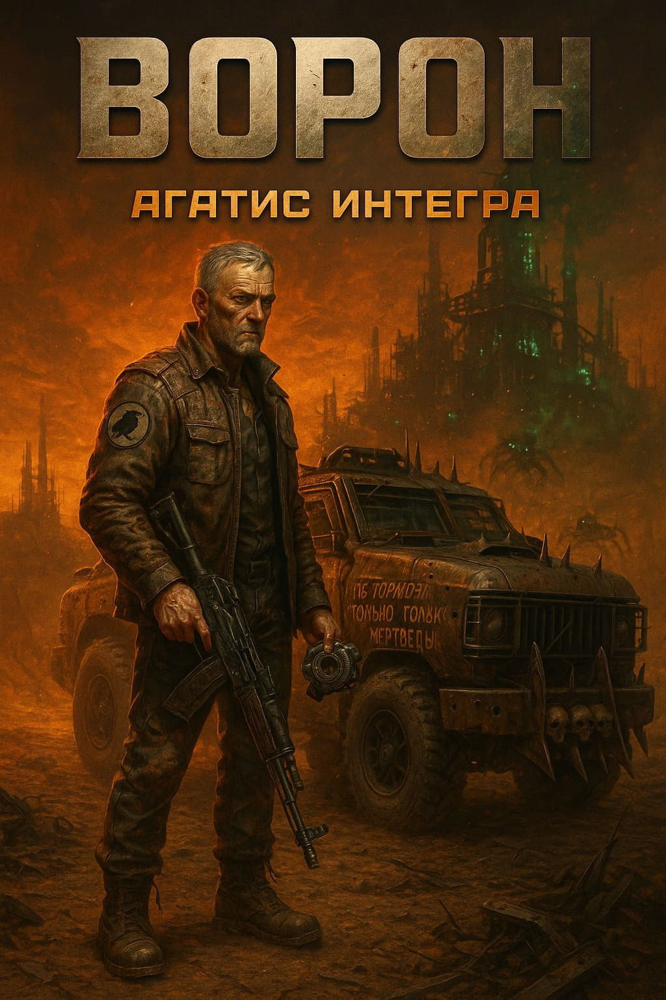

В постапокалиптическом мире Crossout нет места слабым — только скорость, сталь и пламя определяют, кто выживет. Ворон — старый ветеран Пустошей, который тридцать лет назад потерял всё, но остался человеком.
Дорога Ворона — это не миссия и не квест. Это привычка. Тридцать лет назад его сожгли, переломали, оставили лежать в пыли. Он не помнит, кем был тогда. Он помнит, кем стал после.
Он водит то, что осталось от грузовика. На капоте — нацарапанное от руки правило, которое он сам себе выписал и сам себе обещал не забывать. Под капотом — двигатель, который должен был умереть десять лет назад. Под лобовым стеклом — фотография, которую он никому не показывает.
Это рассказ короткий. Около часа чтения. Но он не про экшен. Он про момент, когда ветеран Пустошей встречает кого-то, кто моложе, чем он был, когда всё начиналось. И решает — что с ним делать.
Тридцать лет назад Ворон потерял всё. И с тех пор каждый встреченный человек — это вопрос: оставить тебе ту же дорогу, или сделать чуть короче.